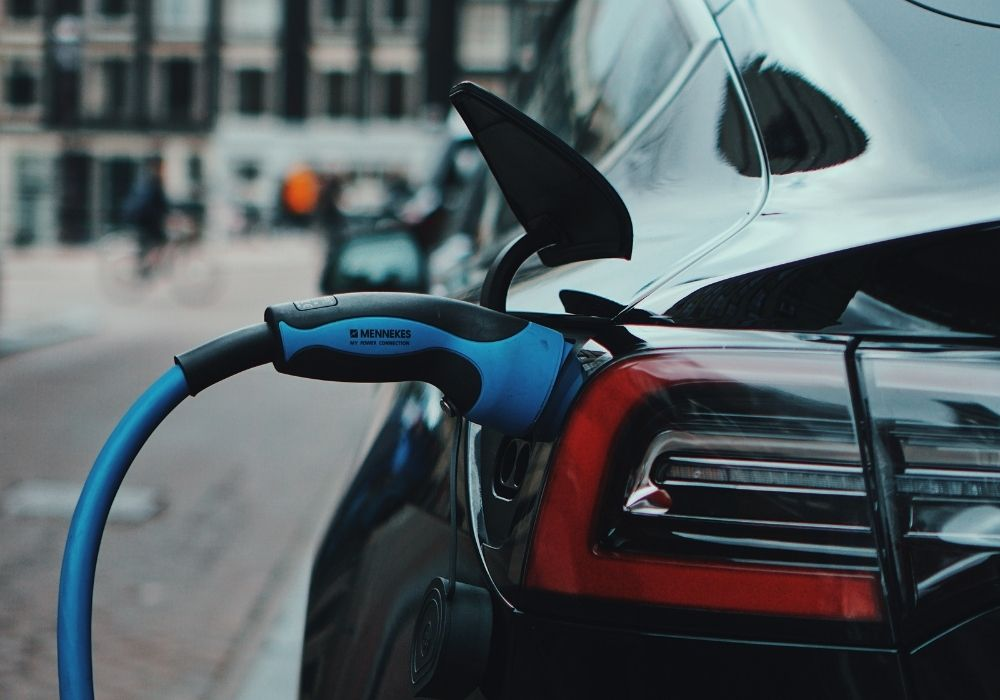

Aumento da frota de veículos elétricos vai exigir mão de obra altamente qualificada

A transição energética contempla uma grande mudança na indústria automobilística, com a adoção dos veículos elétricos (VEs) como solução mais sustentável e amigável ao meio ambiente em comparação aos veículos tradicionais com motores de combustão interna.
No entanto, um dos desafios mais significativos enfrentados por essa indústria em crescimento é a escassez de profissionais qualificados para manutenção e reparos nos sistemas elétricos dos VEs. A falta de mão de obra especializada é um obstáculo que precisa ser superado para o sucesso contínuo da revolução elétrica na mobilidade.
Tais tarefas são significativamente diferentes daquelas dos veículos com motores a combustão. Isso se deve aos diferentes componentes presentes nos sistemas de propulsão elétrica, como baterias, motores elétricos, inversores e dispositivos que contam com eletrônica de potência.
Apesar da quantidade de componentes ser muito menor em um veículo elétrico quando comparados ao veículo tradicional, há a necessidade de mão de obra altamente especializada nesses componentes, para garantir a correta intervenção, realização de diagnósticos e eventuais reparos, permitindo que os VEs funcionem de forma eficiente e segura.

A escassez de mão de obra qualificada para trabalhos em modelos eletrificados (100% elétricos, híbridos ou híbridos plug-in) representa uma preocupação legítima, uma vez que pode afetar diretamente a satisfação do cliente, a segurança e a confiabilidade dos veículos elétricos.
Para enfrentar esse desafio, é essencial que governos, fabricantes de automóveis e instituições educacionais trabalhem juntos para desenvolver programas de formação abrangentes e acessíveis, promovendo a aquisição de habilidades especializadas necessárias para o setor de VEs.
Por esse motivo, o setor se mobiliza e já oferece alguns cursos de qualificação. É o caso da GreenV Academy, primeiro centro de ensino dedicado ao treinamento e estudo da eletromobilidade. Dentro do curso é possível encontrar diversos cursos de formação, que abordam desde a introdução à mobilidade elétrica até módulos voltados para à indústria e executivos, proporcionando uma visão global do setor.
E quais são as principais diferenças? O instrumental de trabalho, equipamentos de proteção, coletivos e individuais e a própria oficina tem características próprias para a manutenção e o reparo de VEs, bem como as habilidades técnicas especializadas, onde a segurança é uma preocupação crítica ao lidar com veículos elétricos, por conta da presença de sistemas de alta tensão em corrente contínua (baterias) e em corrente alternada (motores elétricos, compressor do ar condicionado).
A eletricidade é um elemento fundamental presente nos VEs, e saber realizar tarefas nesse ambiente, de forma segura, é uma prioridade. É necessário conhecimentos básicos e ter certificações normalizadas para trabalhar com altas correntes e tensões, minimizando riscos para os clientes e para si.
Diagnosticar problemas em um modelo elétrico requer um alto nível de especialização, para identificar complicações com precisão e eficiência, reduzindo o tempo de inatividade do veículo. Isso ocorre porque a tecnologia embarcada nos veículos elétricos está em constante evolução.
Por isso, todos os envolvidos nessas operações precisam se manter atualizados com as mais recentes inovações e regulamentações para garantir que os veículos estejam em conformidade e funcionando perfeitamente, após passarem pelas intervenções.
A formação e atualização contínua do corpo técnico são fundamentais para garantir que a nova geração de veículos elétricos seja confiável, segura e eficiente, contribuindo para um futuro mais sustentável e ecológico no setor. Além disso, a padronização de procedimentos e regulamentos de segurança e a promoção da conscientização sobre a importância de técnicos qualificados na manutenção de VEs são passos cruciais para atender à crescente demanda por especialistas em veículos elétricos.